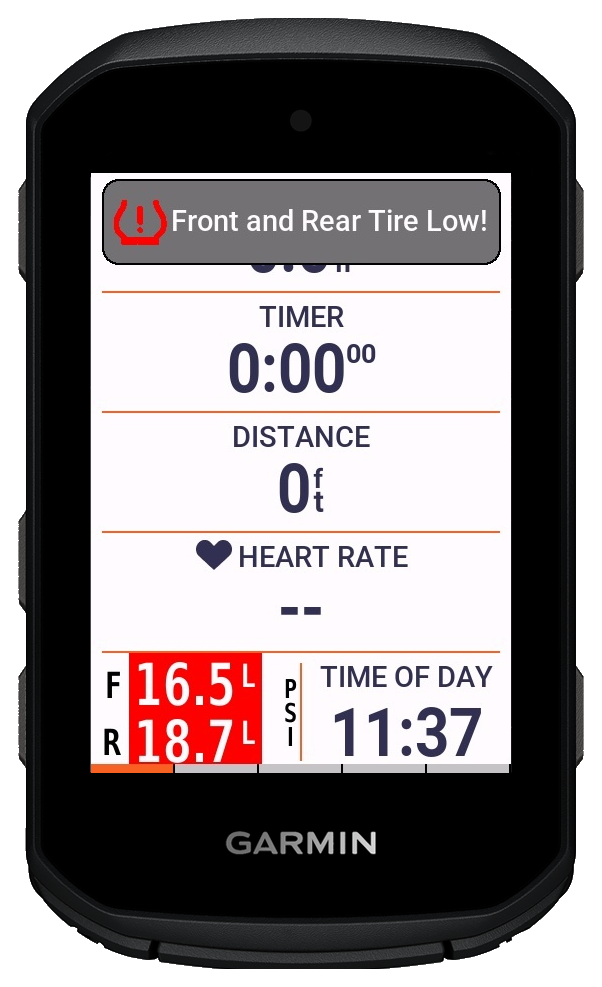
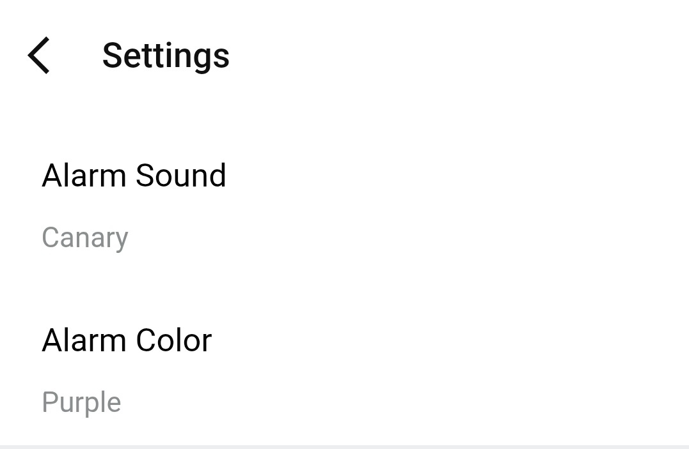

Road
Shorter delay, faster reset
Road pressure is usually more stable, but temperature swings can still move the baseline enough to matter. Shorter alert timing usually stays responsive without much noise.
Pressure warning system
TubeWitch can show popup alerts, play tones, and trigger watch vibration. The real value is not just that alerts exist, but that the delay and reset behavior can be tuned so warnings feel useful instead of noisy.
TubeWitch can keep watch in the background, so you can leave your map or preferred screen up and still get popup and audible alerts.

In TubeWitch for Tubolito SYNCD, set Front Low Target / Front High Target and Rear Low Target / Rear High Target in each Sensor Set in TubeWitch settings. These limits are set in TubeWitch, not in the manufacturer's mobile app. A value of 0 disables that individual limit; when both limits are set, High Target must be greater than Low Target. Choose units first, because changing units does not convert saved targets.
Exact numbers depend on pressure target, ambient temperature, and terrain, but the pattern below is a sensible starting point.
Road
Road pressure is usually more stable, but temperature swings can still move the baseline enough to matter. Shorter alert timing usually stays responsive without much noise.
Gravel
Mixed surfaces create more transient pressure changes, while temperature still shifts the baseline pressure. Slightly longer timing helps avoid repetitive alerts.
MTB or rough terrain
Rough terrain creates more momentary variation, and heat can stack on top of that during a ride. Calmer timing helps reserve alerts for changes that are real and sustained.
Alert timing controls are designed to catch real pressure events while reducing repeat noise.
Choose how long pressure must stay high or low before a warning triggers.
Set how long pressure stays back in range before that alert state fully clears. Alarm Repeat adds repeats 90 seconds apart; 0 adds no repeats.
Select popup, tone, color, and vibration behavior for each device type and riding context.


| Marker | Meaning | Typical next action |
|---|---|---|
| L / H | Pressure is below or above the corresponding low/high target configured in the active TubeWitch Sensor Set | Adjust pressure or inspect for leak and temperature effects |
| ? | No valid pressure update for 250 seconds (4 minutes, 10 seconds); the last reading is stale | Wake the Tubolito SYNCD sensors and confirm fresh broadcasts are received |
| X | Sensor timeout was reached during activity | Use touch to rescan or stop and resume activity to rescan |
The Tubolito SYNCD Settings page includes the full list of alert, timeout, display, and recording options available in TubeWitch for Tubolito SYNCD.